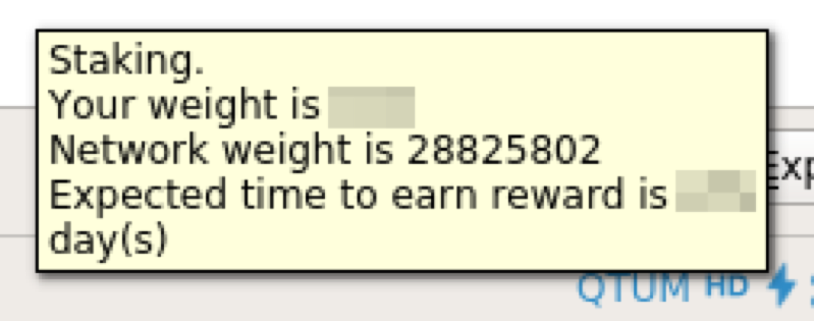
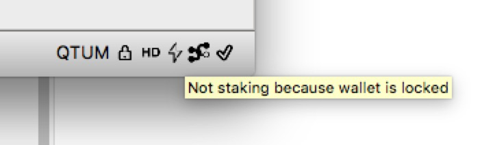

Kalycoin Staking（PoS mining）Tutorial
Kalycoin employs PoS (Proof of Stake) consensus mechanism, which is different from Bitcoin's PoW (Proof of Work). The mining process in PoS system is called staking. The block producer will get 1KLC, as well as the transaction fees and gases as block reward. So the real reward is usually more than 1KLC in total.
Kalycoin blocks are produced in average every 32s
Basic requirements for staking：
- Run a Kalycoin fullnode, and keep online (Since Kalycoin is using PoS, we don't need any mining machine, just PC or even Raspberry Pi can run a fullnode);
- Have some KLC in the wallet (fullnode)（Any amount of KLC can be used for staking, more KLC means higher possibility to stake).
If you have no KLC yet, please get some from market before you doing following staking settings.
Currently, Kalycoin Core wallet is the only wallet that support Kalycoin PoS staking. Note that other wallets like mobile wallet and Kalycoin Electrum are not able to stake for the time being.
Two ways to stake:
- Method 1：Staking with kalycoind, using command line, suitable for Linux/OSX/Windows/Raspberry Pi users who are familiar with command line tools.
- Method 2：Staking with
kalycoin-qtwallet, with GUI, suitable for common users.
Either way works in the same way for staking, so you can choose either method you like.
Method 1：Staking with kalycoind (command line)
1. Run kalycoind
To run kalycoind, please refer to"How to deploy Kalycoin node".
Follow the guidance to run kalycoind:
./kalycoind -daemon
Staking is default on for kalycoind, so no need for other options if you only want to stake.
2. Send some KLC to your wallet
First you can generate a new address with：
./kalycoin-cli getnewaddress
This will generate a new address with Prefix 'Q'. You can send some KLC to this new generated address for staking. You can generate as many addresses as you like, and send arbitrary KLC as you like for staking.
Note：The coin should wait for 2000 blocks before being able to stake, i.e. about 17 hours to MATURE..
After the Kalycoin node syncing to the latest block, you can check current balance with ./kalycoin-cli getbalance or get utxo list with./kalycoin-cli listunspent。（what is UTXO?）。
Please do following steps after your coin is mature.
3. Check staking info
Check current staking info with：
./kalycoin-cli getstakinginfo
You might get the result like this：
{
"enabled": true,
"staking": true,
"errors": "",
"currentblocksize": 1000,
"currentblocktx": 0,
"pooledtx": 5,
"difficulty": 5683612.564280176,
"search-interval": 46,
"weight": 53206430,
"netstakeweight": 2278172497819029,
"expectedtime": 5480654870
}
enabled means if your wallet have enabled staking, it should be true by default. staking means if your wallet is currently staking (mining). weight stands for the amount of KLC that is staking right now, with unit 10^-8KLC, here in the example, we have 0.532KLC staking. expectedtime stands for the expected time that you will get a reward, the unit is second.
4. How to stake if the wallet is encrypted？
If your wallet is not encrypted, you can skip this section. However, for security, we recommand you encrypt your wallet. (How to encrypt?)
Kalycoin wallet can be encrypted with encryptwallet. However, staking will be stopped when it is encrypted. For example, ./kalycoin-cli getstakinginfo for a encrypted wallet：
{
"enabled": true,
"staking": false,
"errors": "",
"currentblocksize": 1000,
"currentblocktx": 0,
"pooledtx": 94,
"difficulty": 5788429.670171153,
"search-interval": 0,
"weight": 53206430,
"netstakeweight": 2438496688951881,
"expectedtime": 0
}
See staking turns to false, which means wallet is not staking.
You can use walletpassphrase to unlock wallet for staking：
./kalycoin-cli walletpassphrase "<your passphrase>" 99999999 true
The meaning of the arguments can be found in the documents "How to encrypt?".
After unlocking, you can double check getstakinginfo, it should look the same with previous unlocked result, staking become true.
Method 2: Staking with kalycoin-qt wallet (official PC wallet)
How to use Kalycoin-qt tutorial? please refer to Kalycoin qt wallet tutorial. Current supported platform: Mac/Linux/Windows.
1. Open Kalycoin qt wallet
Launch the wallet.
2. Send some KLC to your wallet
If you already have some KLC in your wallet, you might skip this step.
If not, please send some KLC to your wallet first. (How to receive?).
Note：The coin should wait for 2000 blocks before being able to stake, i.e. about 17 hours to MATURE..
3. Check staking status
The flash sign at the bottom of wallet shows staking info :
Solid black flash means it is staking now. For more information, you can put your mouse on the flash, e.g.:

Staking: if it is staking；Your weight is: How many KLC are able to used for staking, unit is KLC;Network weight is: How many KLC are staking in the network, unit is KLC；Expected time: expected time to get reward, unit is Day.
Hollow flash measn it is not staking
Possible reasons for not staking：
- 1.There is no coins of no mature coins (more than 2000 confirmations(blocks)) -- Solution: send some KLC to the wallet and wait for 2000 blocks (about 17 hours);

- 2.Wallet is locked/encrypted -- Solution: unlock the wallet for staking. (How to unlock?)

No flash sign means staking is disabled
- 3.Staking is disabled -- Solution: enable staking in the kalycoin.conf (-staking=true)(How to set kalycoin.conf？)

About block reward
The block producer will get more than 4KLC rewards, something to keep in mind:
- The reward come from a new transaction, you can check balance to see if you get the reward.
- Once succesfully stake, you will get 1KLC reward immediately.
- The staked coins (UTXO) will be locked for 2000 blocks, during this period, it cannot be spent nor be used to stake.
How to disable staking?
Staking is by default enabled for Kalycoin wallet. If you need to disable staking for some reason (for example exchanges are always recommanded to disable staking), you might following anyone of the 3 ways below:
1 Add -staking=false when running Kalycoin node：
./kalycoind -staking=false -daemon
For qt wallet, it is like：
./kalycoin-qt -staking=false
2 Add config staking=false in kalycoin.conf;(How to set kalycoin.conf？)
3 Encrypt wallet, since encrypted wallet will automatically stop staking.(How to unlock?)